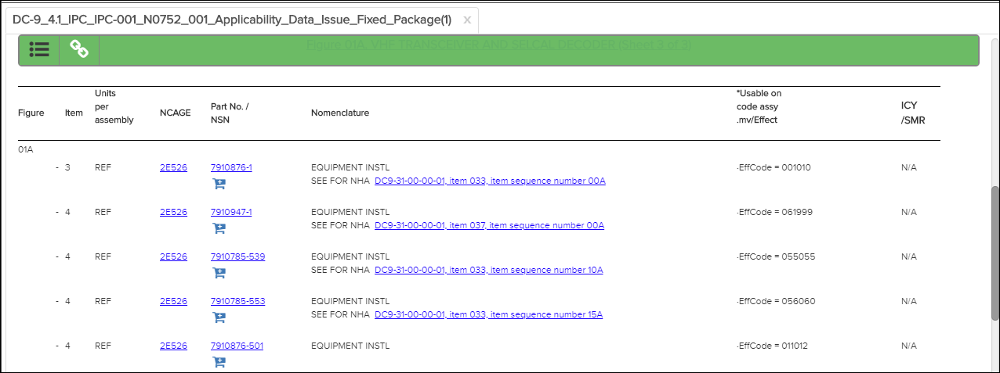
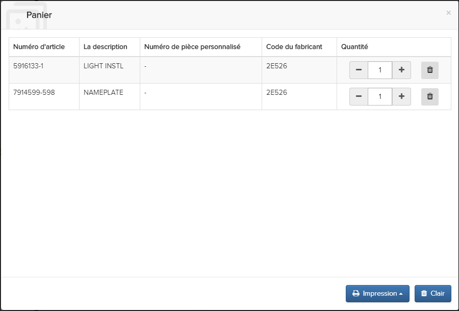
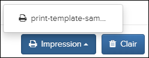

La fonction de panier vous permet d'ajouter des pièces à une commande, d'afficher des
pièces, de modifier des quantités et d'imprimer la commande de pièces.
Remarque : Cette fonctionnalité est activée par défaut. Administrateurs, reportez-vous à la
rubrique Activer / Désactiver les achats Le panier de pièces figure dans le Flatirons
Pinpoint Configuration Guide de pour plus d’informations si vous souhaitez le
désactiver. Si la fonctionnalité n'est pas activée, l'icône du panier
ne s'affiche pas dans la Barre d’action.
Pour ajouter des pièces au panier, procédez comme suit:
- Sélectionnez une publication.
La publication s'affiche dans le volet de
Contenu.

- Sélectionnez l'icône Panier en-dessous de la pièce à ajouter.
La pièce est ajoutée
au panier. Le nombre de pièces est indiqué sur l’icône de la
Barre d’action, par exemple,
.
Remarque : Les pièces ajoutées au panier sont stockées dans
la mémoire locale du navigateur et non dans un magasin de données
persistant.
- Sélectionnez l'icône
pour afficher les pièces ajoutées.

Vous pouvez augmenter ou diminuer le nombre de pièces ou en supprimer.
Remarque : Votre administrateur peut personnaliser l'affichage des colonnes du panier.
Administrateurs, reportez-vous à la rubrique Activer / Désactiver le panier d’achat
de pièces dans la section Flatirons Pinpoint Configuration Guide pour plus
d'informations.
- Sélectionnez le bouton Imprimer pour imprimer la commande de
pièces. Les modèles d'impression disponibles apparaissent, par exemple:

Remarque : Votre administrateur peut créer des modèles d'impression
supplémentaires. Administrateurs, reportez-vous à la configuration imprimer Modèles
pour le panier d'achat de pièces dans le guide de Flatirons Pinpoint Configuration
Guide pour de plus information.
- Sélectionnez un modèle d'impression.
Une sortie PDF pour la commande de pièces est
téléchargée.